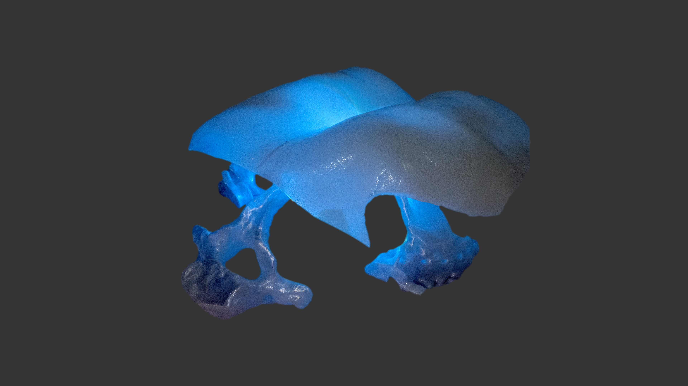
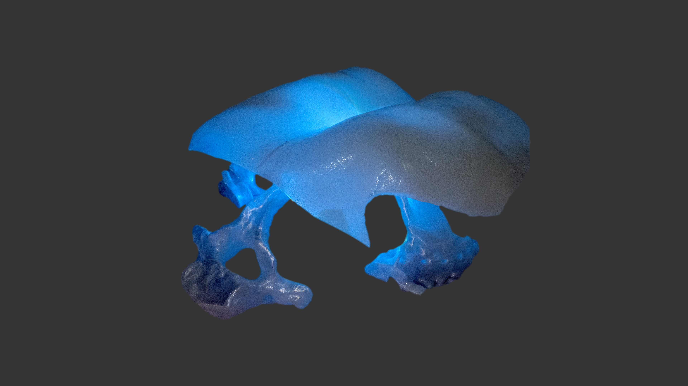
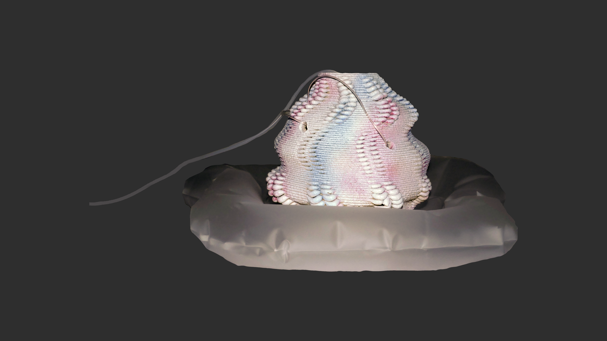
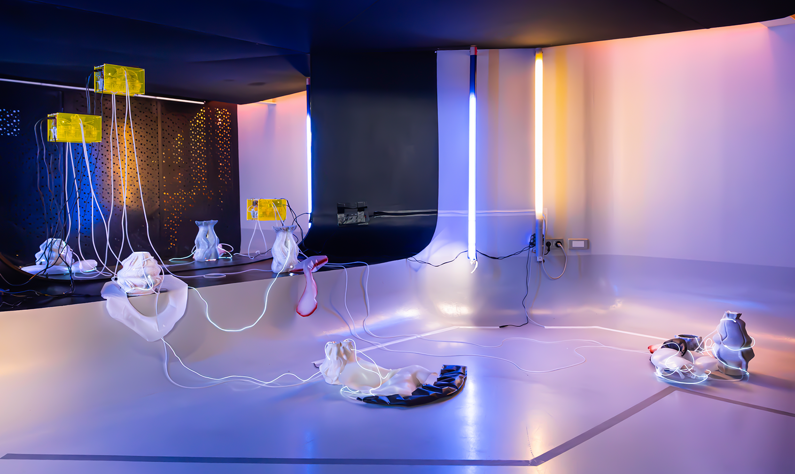
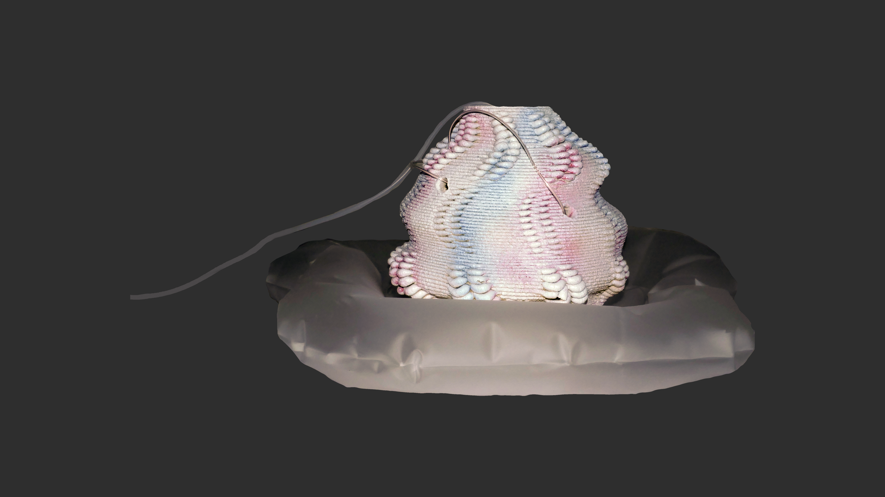
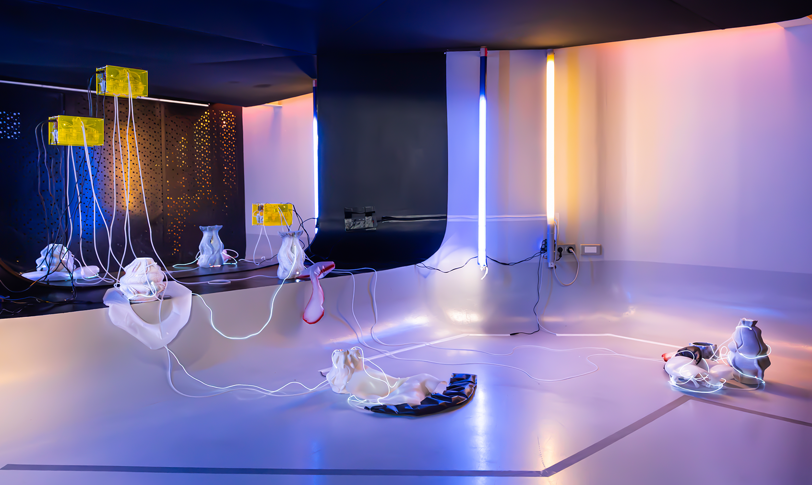

body circuit / parcours Corporel, Kinematic sculpture @ ISEA - Paris, 2023
parcours corporel / body circuit is a kinetic installation that explores human-robot interactions through sensory encounters. In a haptic network, soft machines housed in organically shaped ceramic vessels pinch, inflate and caress disarticulated human limbs, molded from the artists' bodies. Pneumatic tubes and electroluminescent wires establish connections between the zones of interaction. This work creates a unique space where soft and delicate entities intertwine with rigid and complex bodies, offering both tenderness and support. It presents an alternative world where technology and relationships with the human body revolve around the concept of care.
In this iteration of the piece, the installation contains five 3D printed ceramic vessels that exhibit organic features vaguely reminiscent of the human body with their bumps, cracks, and curves. Inflatable robotic objects made of silicone and semi-transparent TPU that resemble human organs inhabit these ceramic pieces where they inflate and deflate with a slow pulse. These inflatable objects are powered by three small air pump systems fixed to the floor and the mirror. LEDs are installed inside the ceramics, delicately illuminating the structure from within. Finally, two body parts made of silicone, a buttock and a torso, are placed inside this sensory network.
parcours corporel / body circuit is material-driven and embraces manual and digital fabrication workflows.
a collaboration with
Sam Bourgault
Exhibition
ISEA X ELEKTRA
The 28th International Symposium on Electronic Art edition @ Forum des images, Paris FR
May 2023
Credits
Photos by Quentin Chevrier
 

 




THANKS!